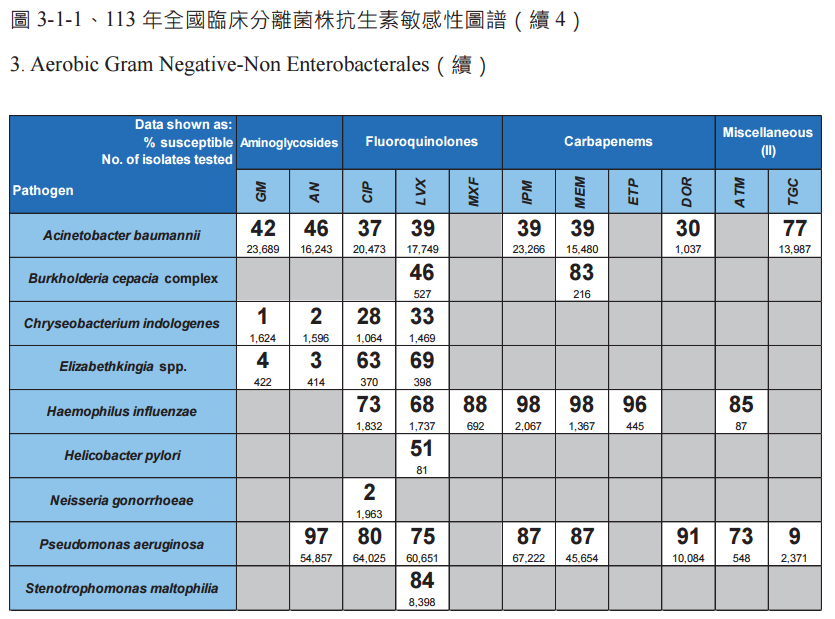
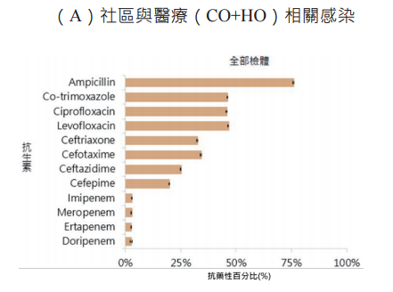
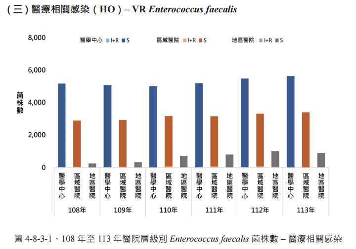
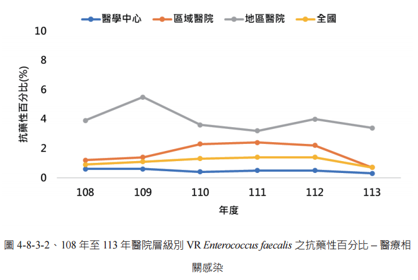

看年報、論文裡的圖表，逐張手寫描述又費時又難保持客觀一致。ChartScribe 用視覺模型替你產出純文字／Markdown／LaTeX，只描述數據、不加詮釋。
監視年報、研究報告裡動輒數十張圖表，人工逐張描述既耗時、用詞又容易前後不一或不小心加入主觀判讀。ChartScribe 把這段標準化：固定的客觀寫作守則、可重複套用的風格，讓每張圖的描述風格一致。
拖拉、Ctrl+V 貼上或選檔，可一次多張批次處理。
挑一個風格預設；每個預設的 system prompt 都能展開檢視與編輯。
產出純文字／Markdown／LaTeX，可複製、下載或整批合併。
以下為臺灣抗生素抗藥性監視年報（AMR）四種圖表類型的實際範例：左為輸入圖表，右為 ChartScribe 產出的客觀描述。

本圖為 Aerobic Gram Negative–Non Enterobacterales 敏感性圖譜。A. baumannii 對 aminoglycoside 類（GM 42%、AN 46%）、fluoroquinolone 類（CIP 37%、LVX 39%）與 carbapenem 類（IPM／MEM 39%）敏感性均偏低，僅 tigecycline 達 77%；P. aeruginosa 對 carbapenem 類達 87% 以上、amikacin 97%。

本圖為某菌種之抗藥性百分比橫條圖（全部檢體，CO+HO）。對 ampicillin 抗藥性最高（約 75%），fluoroquinolone 類（ciprofloxacin、levofloxacin）與 co-trimoxazole 約 45%，第三代 cephalosporin 類約 30%；carbapenem 類最低，均低於 5%。

本圖為 108–113 年醫療相關感染（HO）各菌種占當年度菌株數之比率（100% 堆疊）。前三名 K. pneumoniae、E. coli、P. aeruginosa 占比相近（各約 16–17%），6 年間大致持平；其後依序為 Enterococcus faecium、S. aureus、A. baumannii 等。

本圖為 108–113 年 VR Enterococcus faecalis 抗藥性百分比趨勢，含醫學中心／區域／地區／全國四條線。整體多在 5% 以下，以地區醫院最高（109 年約 5.5% 後回落至 3–4%），醫學中心最低（約 0.5% 以下）。
只描述圖表呈現的數據，不加臨床判讀；專有名詞保留英文。
每個預設都附完整 system prompt，可即時編輯並存於本機、隨時還原。
同一份結果可輸出純文字、Markdown、LaTeX，確定性轉換、彼此一致。
一次貼多張圖，逐張產生、可整批合併複製或下載。
可儲存多把命名 key、各自帶模型，隨時切換；還能抓取你帳號可用的模型。
打開網址即用，key 只存於你的瀏覽器 localStorage，不經任何中間伺服器。
內建五種預設，涵蓋 AMR 年報的主要圖表類型，也可自行調整 prompt 套用到其他領域。
自帶你的 API key、零安裝，資料只在你的瀏覽器裡處理。
開始使用 →